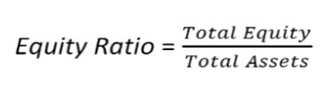

The equity ratio is a financial ratio indicating the relative proportion of equity used to finance a company's assets. The two components are often taken from the firm's balance sheet or statement of financial position (so-called book value), but the ratio may also be calculated using market values for both, if the company's equities are publicly traded and is expressed as follows:
Examples (choose from the list or add a new one):
{% if form %} {% else %}| Year | Total equity | Total assets | Equity ratio |
| {{ er.year }} | {{ er.total_equity }} | {{ er.total_assets }} | {{ er.equity_ratio }} |